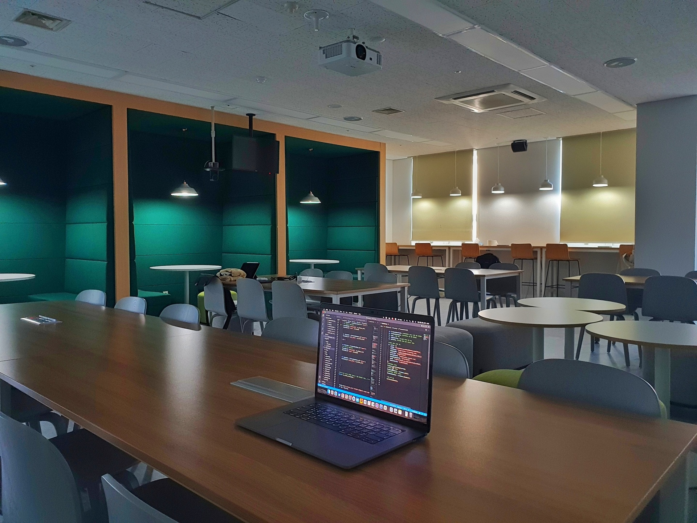
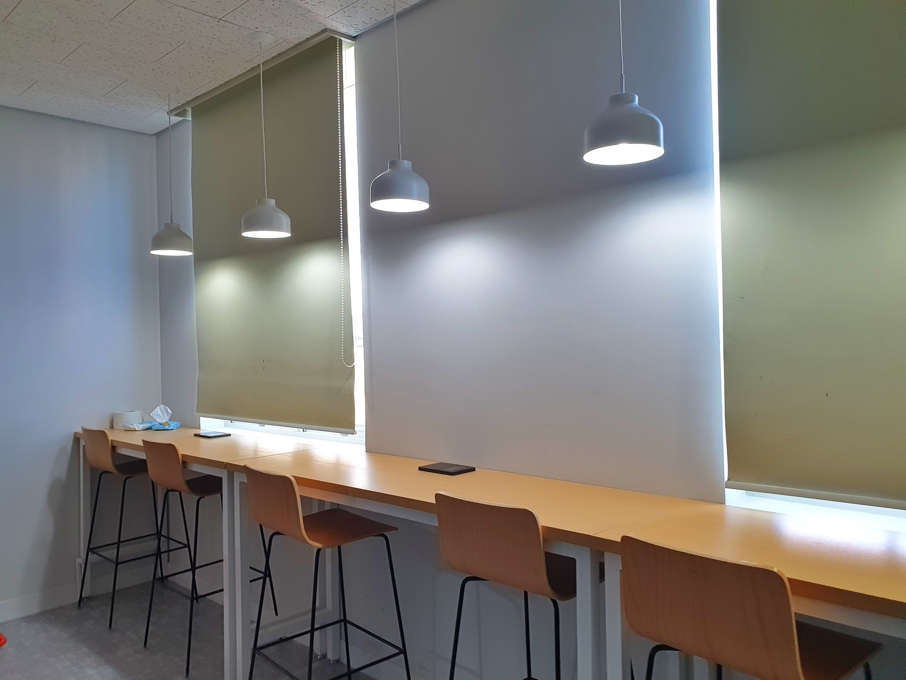
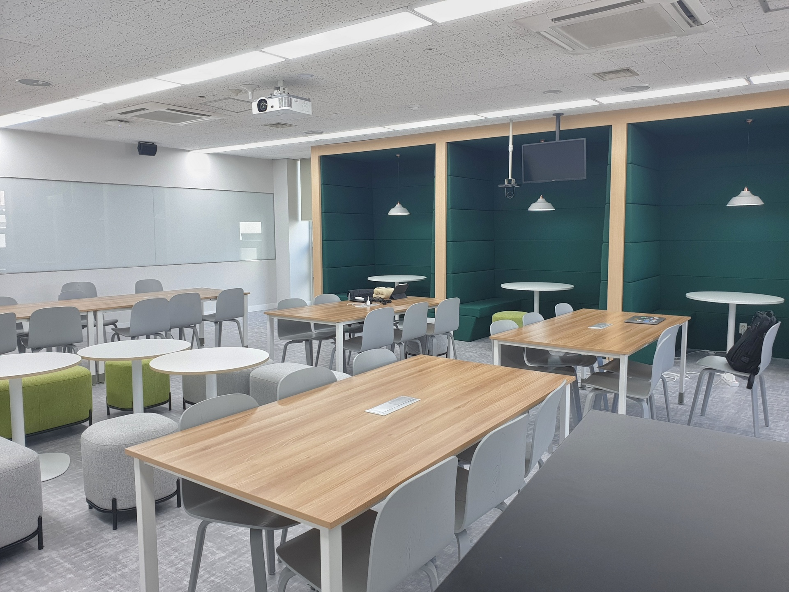

학과소개
미래를 주도할 첨단 연구와 교육이 이루어지는
경희대학교 빅데이터응용학과의 홈페이지입니다.
학과개요
전공소개
경희대학교 빅데이터응용학과는 빅데이터 및 인공지능 부분의 인재를 기르고자 2022년에 신설된 첨단 학과로서
인공지능, 빅데이터, 경영학을 통섭적으로
교육하는 첨단 학과입니다.
이러한 교육방식은 전 세계에서도 흔하
지 않은 매우 독창적이고 세련된 것입니다.
수학, 통계학, 컴퓨터과
학, 프로그래밍 등의 교육을 기본적으로 제공하면서, 데이터베이스,
머신러닝, 네트워크과학, 최적화이론, 의사결정이론, 뇌·인지과학
과 같은 전문 분야를 심도 깊게 공부하도록 하여 학생들이 평생의
자산을 가지고 졸업할 수 있도록 교육하며 또한 이러한 지식을 인공지능, 이커머스, 교육, 의료,
그리고 경영 분야와 연결시켜 비즈니스 감각과 역량을 갖춘 인재로 성장하도록 하는 것을 목표로 하고 있습니다.
교육프로그램
경희대학교 빅데이터 응용학과는 인공지능과 빅데이터 분야에서
최고 권위를 갖춘 학술단체인 한국지능정보시스템학회
회장을 역임한 세 분의 교수님과, 제2대 한국빅데이터학회 회장을 역임한 교수님, 경희대학교 내 Top 1%의 연구실적을 갖춘
경희 Fellow에 선
정된 두 분의 교수님 등, 세계적 수준의 교수진을 보유하고 있습니
다. 공학과 경영학을 융합한 교육과 연구가 가능하며,
회기(서울)캠퍼스
물리학과, 수학과, 국제캠퍼스 산업경영공학와 같은 관련 학과 교
수님들의 강의도 수강할 수 있습니다.
또한 대학원 빅데이터응용학과 및 경영학과와 연계된 학·석사연
계과정도 제공하고 있습니다.
4학년들의 대학원 강의 수강을 장려
하여 학생의 수준과 목표에 맞는 교육을 받을 수 있습니다.
인공지능과 빅데이터 실습을 위한 개방형 실습실(Open Lab)을 갖
추고 있으며, 인공지능/빅데이터 운영과 실험을 위한
서버 및 클라우드 서비스(AWS, Google Cloud, Azure)를 제공합니다.
실습에 사용/제공되는 클라우드 서비스 :
- Github
- Amazon Web Service
- Google Cloud
- Firebase Database
- MATLAB
- Visual Studio Code
- RStudio
- Microsoft Azure
- Jetbrains Jupyter
개방형 실습실 OpenLab



학과의 교육목표 및
비전, 인재상
경희대학교 빅데이터응용학과의 인재상은 다음과 같이 다섯 가지
핵심 역량에 주목합니다.
•첫째. 수학, 통계학, 컴퓨터과학, 프로그래밍, 데이터베이스, 의사
결정이론 등의 기초가 확립된 인재
•둘째. 빅데이터 분석, 인공지능 기법, 네트워크 분석, 최적화 등의
이론을 체화한 인재
•셋째. 재무, 회계, 생산, 마케팅, 인적 자원 등 제반 경영 분야에
인공지능과 빅데이터를 응용할 줄 하는 감각을 갖춘 인재
•넷째. 인공지능과 빅데이터 분야의 글로벌 흐름을 이해하고 이에
적극적으로 동참하려는 월드클래스 인재
•다섯째. 인공지능과 빅데이터 기술과 서비스를 인류와 사회의 발
전을 위해 활용하고 윤리적 책임의식을 갖춘 인재
졸업 후 진로
-창업 중심의 학업, 연구, 인턴십, 협력 활동 권장으로 성공률 높은 창업가
-인공지능과 빅데이터 분야의 개발자
-블록체인과 데이터 기반의 개발자
-첨단 산업 분야의 데이터 기반 기획경영자 (한화)
-첨단 산업 분야의 데이터 분석 기반 경영전문가 (마켓컬리)
-첨단 산업 분야의 데이터 엔지니어 (토스페이먼츠)
-첨단 산업 분야의 데이터 사이언티스트 (토스페이먼츠)